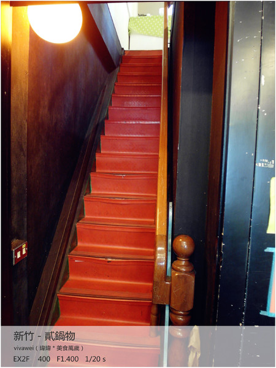
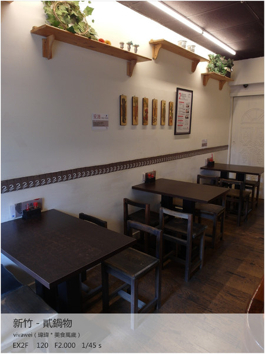

今天剛好來到新竹，我就想要吃一下這個讓人懷念的味道。
因為之前曾經在新竹念過書，很常和同學一起來這邊吃鍋物！
其實他們內用的座位並不多，在一樓的座位大約只有１０個座位，還蠻溫馨的。
在牆上可以看到很多的便利貼，有很多學生在上面寫著自己的夢想和目標！
其實貳鍋物他們也還有二樓的用餐空間喔！走上這條小小的樓梯就可以到二樓囉～
二樓的用餐位置，最多可以容納１６個人，不過相較之下，我比較喜歡一樓的用餐氣氛啦～～～
這邊除了台灣時間以外，還有東京的時間，也告訴我們要好好的珍惜光陰，把握現在！
茶水的部分，是提供自取的，熱熱的麥茶真的蠻好喝的！
其實貳鍋物的Ｍｅｎｕ真的蠻簡單的，鍋物的部分主要就是湯頭和主食還有肉類的不同。 另外還有冷麵系列還有日式丼飯系列，而且還很貼心的有提供素食的鍋喔！ 不過要注意：每人低消45元，共鍋則要收取共鍋費20元。
這邊還有加點區，還有飲品區，價格都還算是蠻合理的。 如果是要內用的話，就要勾選完後拿到櫃檯去結帳，都算是比較自助式的，所以也沒有收服務費啦！
等了一下下，我今天的鍋物就送上來囉，這樣一鍋光是看起來就很滿足了
跟我幾年前來吃，好像有變得比較貴了些，不過對我來說還算是可接受的價位。
除了原本的鍋物以外，還有白飯、醬料還有蛋黃，整體感蠻足夠的，而且湯匙是大大的木製湯匙，感覺很有質感！
我選的主食是白飯＋烏龍麵，這樣一次就可以吃到兩種不同的主食囉，而且１４９元也是他們裡面最貴的一種了。 他們的鍋物價格大約在９９元到１４９元，所以你想要吃便宜一點的也是有啦！
他們給的烏龍麵還算蠻多的，而且還算Ｑ，比較表現就算是中等，也還不到特別突出的地步就是了。
我選的肉是豬肉，他們鍋物裡面的肉還算分量蠻多的！很實在！<
/p>

另外還有魚板和蒟蒻。
還有兩塊嫩嫩的豆腐。
還有一些我不敢吃的香菇和菇類。
他們的豬肉一片就蠻大一塊的耶！光是這樣就覺得一鍋１４９圓真的是很合理的～～～
白飯上面也撒了芝麻，把一鍋的鍋物和白飯都吃完，真的會吃得飽飽的，如果是男生食量比較大的話，也可以加點白飯啦，加點一碗白飯是１０元。
鍋物裡面的食材也可以沾它們的醬料，醬料的部分是屬於比較清爽的。
我覺得靈魂人物就是這顆蛋了！這個好像不是每一鍋都有附的，我目前只知道我點的壽喜鍋有附啦～～～
沾了生蛋黃的豬肉感覺好吃度倍增！！！我真的好愛生蛋黃的味道，根本就是最平凡的美味嘛
而且沾了肉以後，剩下的蛋黃還可以拿來配飯耶，白飯上都是滿滿的蛋黃液，我好喜歡阿～～～～～
引自:http://www.ipeen.com.tw/comment/448272